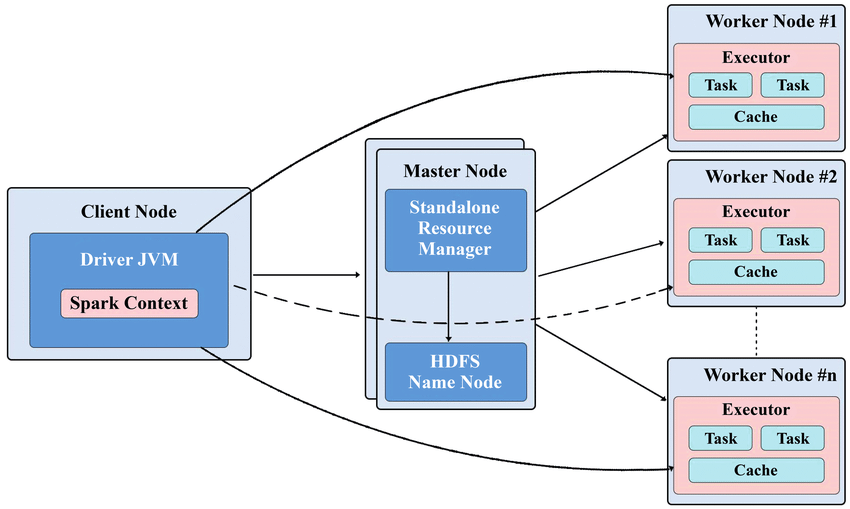
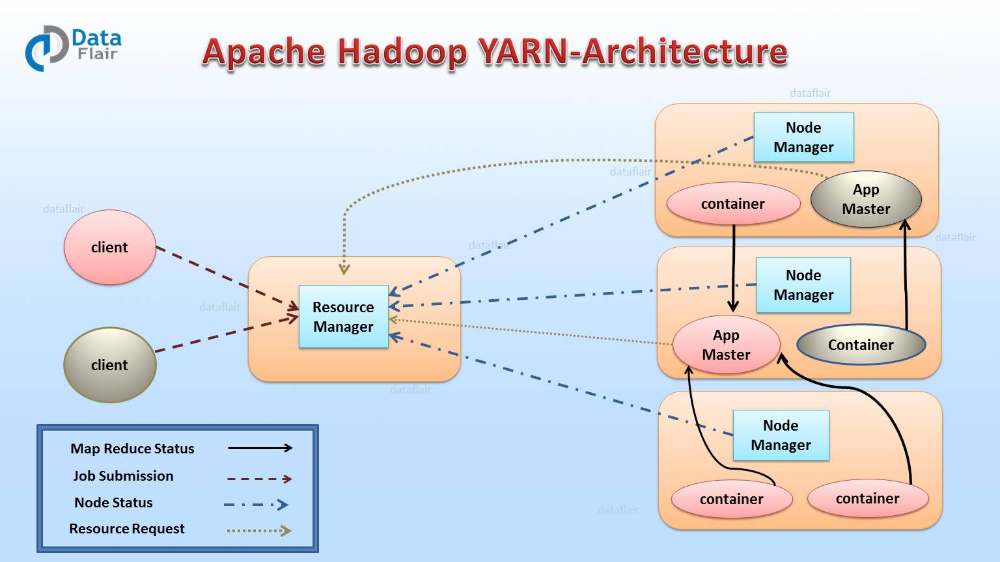

Tipos gestores de clústeres (YARN, Standalone, Kubernetes)
INTRODUCCIÓN
Spark necesita un gestor de recursos para decidir dónde se ejecutan el driver y los executors. La elección depende del entorno disponible: laboratorio local, clúster Hadoop, plataforma de contenedores o infraestructura heredada.
- Standalone: opción nativa y sencilla para aprender Spark o montar un clúster dedicado.
- YARN: opción habitual cuando ya existe un ecosistema Hadoop.
- Kubernetes: opción moderna para ejecutar Spark en contenedores.
- Mesos: alternativa histórica, útil principalmente si ya existe una plataforma Mesos.
STANDALONE
Spark Standalone es el gestor de clúster incluido con Spark. Es la forma más directa de ejecutar aplicaciones distribuidas sin instalar Hadoop ni Kubernetes.
Cuándo usarlo
- Laboratorios docentes y pruebas locales.
- Clústeres pequeños o dedicados solo a Spark.
- Primer contacto con driver, master, workers y executors.
Componentes mínimos
- Master: coordina el clúster y asigna recursos.
- Workers: máquinas donde se ejecutan los executors.
- Driver: programa principal de la aplicación Spark.
- Executors: procesos que ejecutan tareas y almacenan datos temporales.

Figura 1: Topologías y modos de despliegue de Spark en diferentes entornos de ejecución
# Arrancar el master
sbin/start-master.sh
# Arrancar un worker conectado al master
sbin/start-worker.sh spark://IP_MASTER:7077
# Enviar una aplicación
spark-submit --master spark://IP_MASTER:7077 app.pyIdea clave: es la opción más sencilla para practicar, pero ofrece menos integración empresarial que YARN o Kubernetes.
YARN
YARN es el gestor de recursos de Hadoop. En Spark on YARN, Spark no gestiona directamente las máquinas: solicita contenedores a YARN para ejecutar el driver y los executors.
Cuándo usarlo
- La organización ya tiene un clúster Hadoop.
- Varios usuarios o aplicaciones comparten recursos.
- Se necesita integración con HDFS, Hive u otras herramientas Hadoop.
Componentes mínimos
- ResourceManager: coordina recursos globales.
- NodeManager: gestiona recursos en cada nodo.
- Contenedores YARN: alojan driver y executors.
spark-submit \
--master yarn \
--deploy-mode cluster \
app.pyIdea clave: YARN es adecuado para plataformas Hadoop existentes, pero añade más configuración que Standalone.

Figura 2: Arquitectura detallada del clúster de Spark con gestión de recursos YARN
KUBERNETES
Kubernetes ejecuta aplicaciones en contenedores. En Spark on Kubernetes, el driver y los executors se crean como pods dentro del clúster.
Cuándo usarlo
- Entornos cloud o híbridos.
- Equipos que ya trabajan con contenedores Docker.
- Necesidad de portabilidad entre proveedores o entornos.
Componentes mínimos
- API Server: recibe las peticiones de Spark.
- Pods: ejecutan driver y executors.
- Imagen Docker: contiene Spark, dependencias y código.
spark-submit \
--master k8s://https://API_SERVER:6443 \
--deploy-mode cluster \
--conf spark.kubernetes.container.image=spark:3.5.1 \
local:///opt/spark/app.pyIdea clave: Kubernetes aporta portabilidad y aislamiento, pero exige conocer imágenes, permisos, red y volúmenes.
MESOS
Apache Mesos fue una plataforma de gestión de recursos para ejecutar varios frameworks distribuidos en el mismo clúster. Hoy se usa mucho menos que Kubernetes, pero puede aparecer en infraestructuras heredadas.
Cuándo usarlo
- Ya existe una instalación Mesos en producción.
- Se mantiene una plataforma histórica que ejecuta Spark sobre Mesos.
- Se estudia la evolución de los gestores de clúster.
Componentes mínimos
- Mesos Master: coordina recursos.
- Mesos Agents: ejecutan tareas en los nodos.
- Framework Spark: solicita recursos a Mesos.
spark-submit \
--master mesos://IP_MASTER:5050 \
--deploy-mode cluster \
app.pyIdea clave: no suele ser la opción recomendada para nuevos proyectos, salvo que Mesos ya exista.
RESUMEN PRÁCTICO
| Gestor | Mejor uso | Ventaja principal | Limitación principal |
|---|---|---|---|
| Standalone | Docencia, pruebas, clúster Spark dedicado | Sencillo de arrancar | Menos integración empresarial |
| YARN | Clúster Hadoop existente | Comparte recursos con Hadoop | Configuración más pesada |
| Kubernetes | Cloud, contenedores, entornos modernos | Portabilidad y aislamiento | Requiere dominio de Kubernetes |
| Mesos | Infraestructura heredada | Comparte recursos entre frameworks | Baja adopción actual |
Tabla 1: Tabla de contenidos sobre resumen práctico